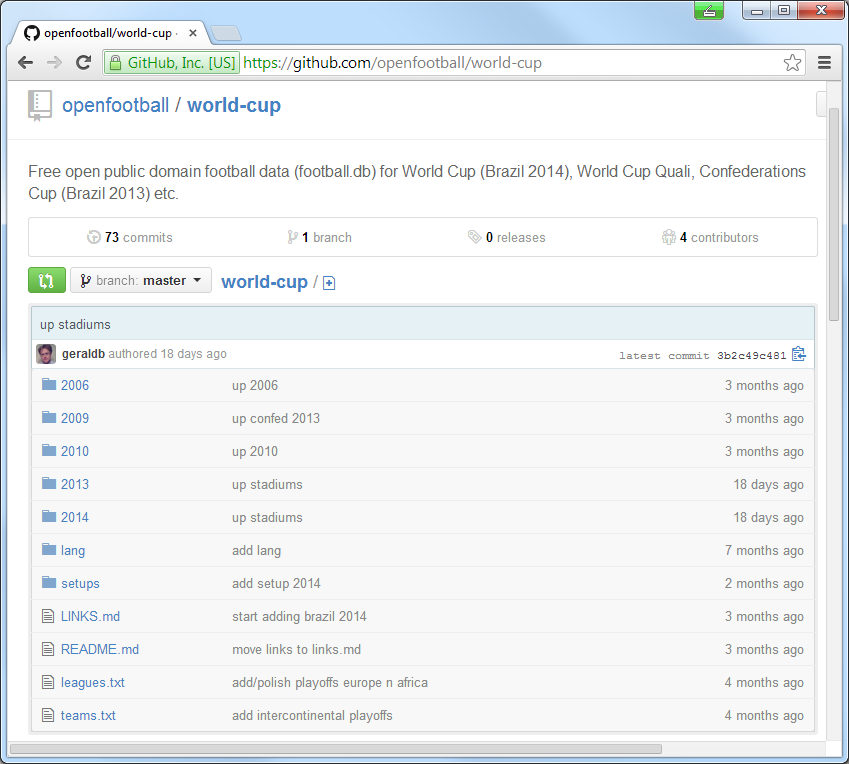
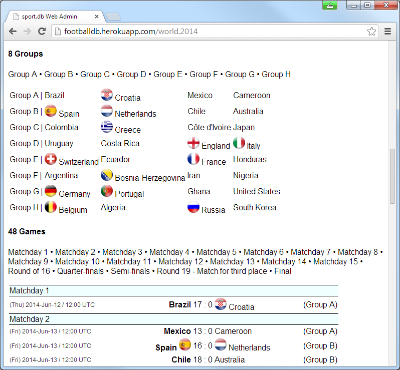
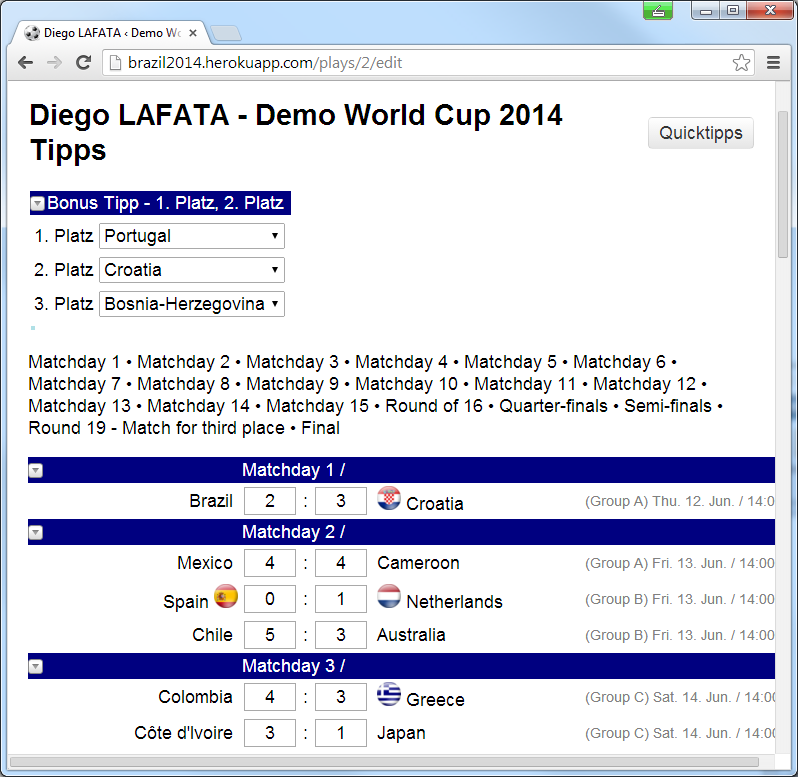

football.db - Open Football Datasportdb Ruby Gemfootball.db in Ruby - Models football.db with HTTP JSON(P) APIGET /beer/guinnessWhen:
Where:
Teams:
Matches:
Q: Where can I get the teams, groups, match schedule (fixtures), players, stadiums lets say in CSV, JSON or SQL?
Q: Where can I download lets say world-cup-2014.db?
Let’s search (google):
Nothing. Nada. Nichts. Niente. Zilch. Zero.
fifa.com/worldcup)=> No open data. Offers a booklet¹ (PDF) for download for match schedule.
¹) Single page, really w/ six FIFA Partners, eight FIFA World Cup Sponsors and another six National Supporters.
en.wikipedia.org/wiki/2014_FIFA_World_Cup)Pro: Best source; open text license or public domain (license-free); everything available for download (page dumps, etc).
Cons: Mostly free-form text, that is, no structured data and no web service.
1) Screen scrap FIFA site with web crawler? Why not?
2) Try to convert free-form text from Wikipedia into structured data? Why not?
3) Do-It-Yourself: Build a Wikipedia for structured data? Why not?
football.db - Open Football DataQ: What Wiki Package to Use?
MediaWiki? Semantic MediaWiki? MoinMoin? DokuWiki? PeanutButterWiki? Any Others?
Q: What Source Format to Use?
XML, JSON, YAML, SEXPS (S-Expressions), RDF Triplets, CSV (Comma-Separated Values), TOML (Tom’s Obvious, Minimal Language)? SQL? Any Others?
github.com/openfootball (Cont.)Q: What Wiki Package to Use?
A: Git (and GitHub)
Why Git?
Learn more @ git-scm.com
Why GitHub?
Learn more @ github.com

Q: What Source Format to Use?
A: Keep it as simple as possible. Hand-crafted not machine-generated source. Easy-to-read and easy-to-write.
XML, JSON, YAML, SEXPS (S-Expressions),
RDF Triplets, SQL,
TOML (Tom’s Obvious, Minimal Language),
CSV (Comma-Separated Values)
teams.csv:
gre, Greece, GRE, gr
ned, Netherlands, NED, nl
ger, Germany, GER, de
por, Portugal, POR, pt
esp, Spain, ESP, es
ita, Italy, ITA, it
cro, Croatia, CRO, hr
eng, England, ENG, en
...
What’s missing?
Let’s fix it. Welcome CSV v2 (github.com/csv2).
south-america/br-brazil--stadiums.txt:
### Stadiums
[maracana]
Maracanã|Estádio do Maracanã, 1950
76_935
Rio de Janeiro, RJ
en.wikipedia: Estádio_do_Maracanã
[corinthians]
Corinthians|Arena Corinthians|Arena de São Paulo, 2014
68_000
São Paulo, SP
en.wikipedia: Arena_Corinthians
...
DSL - Domain-Specific Language
##################################
# World Cup 2014 Brazil
# -- Groups
Group A | Brazil Croatia Mexico Cameroon
Group B | Spain Netherlands Chile Australia
Group C | Colombia Greece Côte d'Ivoire Japan
Group D | Uruguay Costa Rica England Italy
Group E | Switzerland Ecuador France Honduras
Group F | Argentina Bosnia-Herzegovina Iran Nigeria
Group G | Germany Portugal Ghana United States
Group H | Belgium Algeria Russia South Korea
# -- Group A
Matchday 1 / Group A
(1) Thu Jun/12 17:00 Brazil - Croatia @ Arena de São Paulo, São Paulo (UTC-3)
Matchday 2 / Group A
(2) Fri Jun/13 13:00 Mexico - Cameroon @ Estádio das Dunas, Natal (UTC-3)
sportdb Ruby GemImport any fixtures:
into any SQL database. Example:
Step 1: Get a copy of the data
$ git clone git://github.com/openmundi/world.db.git
$ git clone git://github.com/openfootball/world-cup.git
Step 2: Let’s build the world-cup-2014.db
$ sportdb --dbname world-cup-2014.db setup --include ./world-cup --worldinclude ./world.db
That’s it.
football.db in Ruby - ModelsEvent Model
ev = Event.find_by( key: 'world.2014' )
ev.title
=> 'World Cup 2014'
ev.teams.count
=> 32
ev.games.count
=> 64
ev.rounds.count
=> 20
ev.groups.count
=> 8
ev.stadiums.count
=> 12
football.db in Ruby - Models (Cont.)Team Model
bra = Team.find_by( key: 'bra' )
bra.title
=> 'Brazil'
bra.country.continent.title
=> 'South America'
bra.games.count
=> 3
football.db in Ruby - Models (Cont.)Game Model
g = Game.find_by( pos: 1 )
g.team1.title
=> 'Brazil'
g.team2.title
=> 'Croatia'
f.group.title
=> 'Group A'
f.round.title
=> 'Matchday 1'
f.stadium.title
=> 'Arena de São Paulo'
f.stadium.city.title
=> 'São Paulo'
football.db in Ruby - Models (Cont.)More Models
football.db with HTTP JSON(P) API$ sportdb serve
Use the football.db HTTP JSON(P) API - Examples
List all teams for an event (league+season) /event/:key/teams
/event/world.2014/teams |
World Cup 2014 |
/event/de.2013_14/teams |
Deutsche Bundesliga 2013/14 |
List all rounds for an event (league+season) /event/:key/rounds
/event/world.2014/rounds |
World Cup 2014 |
/event/de.2013_14/rounds |
Deutsche Bundesliga 2013/14 |
List all games in a round for an event (league+season) /event/:key/round/:pos
/event/world.2014/round/20 |
World Cup 2014 - 20th Round (=> Final) |
/event/de.2013_14/round/5 |
Deutsche Bundesliga 2013/14 - 5th Round |
GET /event/world.2014/teamsList all teams for an event /event/:key/teams
GET /event/world.2014/teams
{
"event": {
"key": "world.2014",
"title": "World Cup 2014"
},
"teams": [
{ "key": "gre", "title": "Greece", "code": "GRE" },
{ "key": "rus", "title": "Russia", "code": "RUS" },
{ "key": "ned", "title": "Netherlands", "code": "NED" },
{ "key": "ger", "title": "Germany", "code": "GER" },
{ "key": "por", "title": "Portugal","code": "POR" },
...
]
}
GET /event/world.2014/round/1List all games in a round for an event /event/:key/round/:pos
GET /event/world.2014/round/1
{
"event": { "key": "world.2014", "title": "World Cup 2014" },
"round": { "pos": 1, "title": "Matchday 1" },
"games": [
{
"team1_key": "bra",
"team1_title": "Brazil",
"team1_code": "BRA",
"team2_key": "cro",
"team2_title": "Croatia",
"team2_code": "CRO",
"play_at": "2014/06/12",
"score1": null,
"score2": null,
"score1ot": null,
"score2ot": null,
"score1p": null,
"score2p": null
}
]
}
Any Example Web Apps?
sport.db.admim - Open Source Rails Engine; see github.com/geraldb/sport.db.admin
Any Example Web Apps?
github.com/openbookie
Any Example Web Apps?
football.js - Open Source JavaScript Matchday Widget - still early stage; see github.com/geraldb/football.jsgithub.com/openfootball/bookAnything Else?
More Open Data Projects
The football.db schema, data and scripts are dedicated to the public domain.
Use it as you please with no restrictions whatsoever.
No Copyright. No License. Creative Commons Zero (CC0). Unlicense.
Keep it simple.
beer.db?A free open public domain beer database n schema for use in any (programming) language (e.g. uses plain text fixtures/data sets). Example:
### Brewery
guinness, St. James's Gate Brewery / Guinness Brewery, 1759, Dublin
### Beer
Guinness|Guinness Draught, 4.2%, irish_dry_stout|dry_stout|stout
GET /beer/guinnessGet beer by key /beer/:key
GET /beer/guinness
{
"beer":
{
"key":"guinness",
"title":"Guinness",
"synonyms": "Guinness Draught",
"abv":"4.2",
"srm":null,
"og":null,
"tags":["irish_dry_stout","dry_stout","stout"],
"brewery":
{
"key": "guinness",
"title": "St. James's Gate Brewery / Guinness Brewery"
},
"country":
{
"key":"ie",
"title":"Irland"
}
}
}